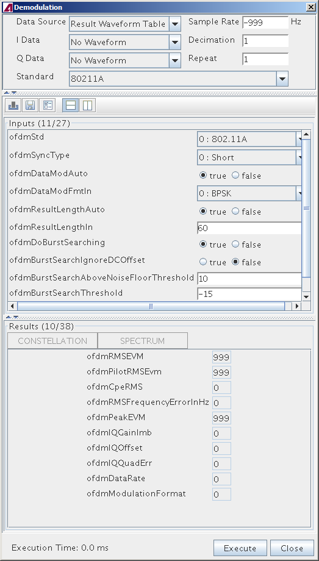

Demodulation (Signal Analyzer)
The demodulation tool in the Signal Analyzer offers a graphical interface for demodulating RF waveforms. With this tool you can adjust input parameters, execute demodulation and visualize the results.
Note The Demodulation tool relies on the demodulation library. Demodulation
library revision can be found in Help menu About in Signal
Analyzer.

Functional changes
- Introduced in SmarTest 7.1.2